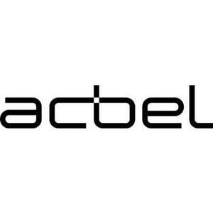

Trade Mark Journal No.2025/049 5 December 2025
UK00004300280 25 November 2025 (9,37,42)

- Class 9
- Electric power supply units; Smart meters; Batteries for electric vehicles; Solar panels; Solar cells; Computer software; Mobile apps; Power cables; Chargers; Transformers; Electric car charging piles; Charging stations for electric vehicles; Power banks; Converters, electric; Electric power converters; Batteries; Accumulators; Computer controllers; Controllers and regulators; Power modules; Battery chargers; Uninterruptable power supply apparatus.
- Class 37
- Repair of energy production plants and machines; Maintenance and repair of solar power installations; Installation, maintenance and repair of computer hardware; Information technology consultancy relating to installation, maintenance and repair of computer hardware; Cable laying; Services of electricians; Custom installation of exterior, interior and mechanical parts of vehicles [tuning]; Machinery installation, maintenance and repair; Vehicle service stations [refuelling and maintenance]; Vehicle battery charging; Charging of electric vehicles; Reservation of charging stations for electric vehicles; Rental of battery chargers for electric motor scooters.
- Class 42
- Computer software design; Design and development of computer hardware; Engineering consultancy; Research and development of new products for others; Research in the field of artificial intelligence technology; Professional consultancy relating to the conservation of energy; Architectural design of energy use facilities; Providing scientific information, advice and consultancy relating to carbon offsetting; Providing scientific information, advice and consultancy relating to net zero emissions; Environmental engineering technical consulting product design; Automatic control system engineering planning and design; Engineering services in the field of electrical power and natural gas production; Technical planning and consulting in the field of light engineering; Research and development services; Research and development of new products for others; Technical research; Technical research projects and studies; Software as a service [SaaS] featuring computer software platforms for artificial intelligence; Technical consultation related with computer data processing; Cloud computing services; Software as a service [SaaS]; Architectural design services; Technical consulting in the field of environmental engineering; Technical project planning in the field of engineering; Computer software consulting services.
ACBEL POLYTECH INC.
Representative: ACCOLADE IP LIMITED